This post presents a literature review, recommendations, and prototype of proposed modules to fill existing gaps in analytical tools by enhancing user experience using a web-based application.
This post constitutes part of the assessment for credit towards the Singapore Management Univerisity module ISSS608 Visual Analytics and Application, AY2020/2021 Term 2.
This section outlines the objective of this project and provides a literature review on how analysis are currently performed, what the existing gaps are, and recommends enhancements to better user experience on using the analysis techniques.
This post forms part of a larger visual analytics project that aims to develop a web-based application to enhance user experience in employing analysis techniques. The analytics project aims to develop user-friendly analytical tools in the following areas:
The project employs listings data scrapped from the Airbnb website, made available by Inside AirBnb via this link. The listings data from Australia (listings.csv) compiled by the website on 22 January 2021 was used for the purpose of this project.
This post focuses on the discussion of the Geospatial Data Visualization and Analysis modules of the web-based application. In summary, a literature review was conducted to research on existing efforts in this aspect; gaps in existing efforts were then identified; enhancements based on well-studied alternatives were proposed; and finally, prototypes of the recommended analytical tools were developed, tested, and discussed in this post.
The data offered by Inside Airbnb are split into several different data sets - this assignment will be focusing on the listings file, which provides detailed data from individual listings put up on the AirBnb database. Information provided includes hosts details, response data, listing information (e.g. price, number of beds, property type, maximum nights), and review scores.
There are currently a number of analyses that has been conducted on the Airbnb dataset. While most of them are focused on one particular country, given that the datasets made available by Inside Airbnb are rather consistent across different geographical space, it is reasonable to assume that the analytical methodologies adopted by these other studies can be easily replicated and reproduced with data from other countries.
One of most prominent and recent study on Airbnb data is by Steve Deane from Stratos, who wrote a blogpost in January 2021 on the topic (which also inspired this project). In his post, Deane provides descriptive statistics (e.g. total number of hosts, most popular destination, number of guests) focusing on the global distribution with a slight inclination towards the United States of America. While some of the statistics were provided, Deane’s analysis is heavily weighted towards the economic aspects of Airbnb (e.g. whether Airbnb affects property values and rents - “Airbnb effect”, whether Airbnb is cheaper than hotels, and economic impact of Airbnb in each country). However, Deane does not provide any higher level data analysis beyond the descriptive ones. He did presented one segment explaining the factors that host should consider when purchasing a property to use as an Airbnb - reflecting some form of explanatory analysis (and perhaps even predictive) but the content was scarce with no elaboration on how these factors were derived. The major ‘flaw’, though, remains the fact that Deane’s blogpost is heavy on qualitative write-up with minimal (or no) meaningful visualization of the statistics he has quoted.
Several blogposts on medium.com provided basic guides on data analysis on the Airbnb dataset. Kwon et. al. (2018), Chen (2019), and Gedik (2020) are some recent examples.
Kwon et. al. (2018) used the Inside Airbnb listing data from Austin, Texas with around 12,ooo listings, and utilized the numerical features to apply Linear Discriminant Analysis, Outliers were detected and removed using the Cook’s distance before a Box-Cox transformation was conducted to normalize the data, and the dependent variable (review score) binned to wrangle into categorical data type. Backward Elimination, Ordinal Logistic Regression, and LASSO Regression methods were employed to conduct explanatory analysis - with all three models turning number of bathrooms as significant predictor for customer ratings. Principal Component Analysis was then conducted with no good result after the model fail to meaningfully provide separation of classes (three classes). The Latent Discriminant Analysis was then conducted on each of the three classes resulted from the PCA. The study concluded that number of listings by hosts and having more bathrooms are crucial in securing higher review score. The advantage of this study is the depth, with detailed discussion on the methodology and results. However, the analysis focuses only on predictive/explanatory model, and is one-dimensional, studying only one dependent variable. The study does not offer interactive features to allow other forms of data exploration (e.g. other clustering methods, geographical influence) or changing of dependent variable (e.g. to examine factors affecting price of listing).
Chen (2019) on the other hand provides an analysis that emphasized on the geographical distribution of listings, and provided more data visualizations (playing to the advantage of using Tableau) that allow viewers to make quick noticeable trends. Chen analysed the 2019 New York City listing data with the objective to predict future Airbnb performance in the city. However, while a predictive model was envisioned, there was little predictive analysis going on in her study - a greater emphasis was placed on qualitative inferences made via the visualization without proper data analytics methodologies. Chen was also limited in her methods of data visualization - for example, when presenting the geospatial distribution of areas by price, she had used a proportional dot map, without a convincing argument of its strength as compared to other visualization methods (such as a choropleth). In fact, the proportional size between the different dots are difficult to be differentiated based on her viz. There are also major flaws with other visualization choice (e.g. showing Average Price by Locations with equal-length bar differentiated by colors on a continuous scale), and the usefulness of some of the viz is also questionable (why might we be interested to know who are the Top 10 Busy Host, and indeed, what is the definition of ‘business’ here). All in all, while Chen presented some simple visualization to expose the potential of data viz using the Airbnb data, more is left desired from the analysis.
Comparatively, Gedik (2020) did a fair job in answering the questions set out by his objective. Using the Seattle listing dataset (via Kaggle), he aimed to find out the common amenities, and top features attracting guests and higher prices. In a Question-and-Answer format, Gedik presented visualizations to help answer each of the question he asked in a simple and succinct manner. In his third question, Gedik also presented the result table of a linear regression model he had ran, showing that property_type_Boat has the largest effect on price of listing. Gedik’s post, however, suffers from the limitation of scarce discussion in the technical methodology aspect. Similar to earlier studies, there is also no interactivity offered to allow viewers autonomy in changing parameters.
Amongst all, Gupta (2019) provided the most well-rounded discussion and presentation using the Airbnb listing data. Gupta aimed to provide an exploratory analysis of Airbnb’s data to understand the rental landscape in New York City. Gupta first employed descriptive time-series statistics to map out the increasing trends in number of listings and reviews in the city, before moving on to present an interactive Shiny App that provides information on individual listing based on sets of filters (e.g. max budget, number of people, minimum rating). While Gupta offered some form of interactivity, the Shiny does not provide any meaningful insights, and is essentially a replica of the user interface offered by Airbnb via the official website.
While non-interactive, Gupta’s subsequent discussion provides a preliminary view of the analytical methodologies that could be employed using the Inside Airbnb listing data. Firstly, he mapped out a geographical spread of the ratings and price by area using a Choropleth map (subsequent discussion in this paper will also conclude that it is indeed one of the better geospatial visualization option for this application). He also provided a quick bar-chart viz of the breakdown in terms of property types, before moving on to discuss the temporal nature and seasonality effect of price in New York City (using both a time series dot plot to analyse monthly patterns and a boxplot for each day of the week. He even employed a calendar heat map of occupancy within the city. After geospatial and temporal analysis, Gupta moved on to conduct text analytics on the reviews dataset to find words most commonly mentioned - an attempt to distil aspects that play important roles in shaping the Airbnb experience. A Shiny app was also developed to allow user to find similar word vectors based on a query word. Lastly, Gupta set out to find out whether there are any correlation between the host response rate, the average ratings, and whether the host is a Superhost. While no predictive model was used, the scatter plot presented provides a quick viz on the explanatory analysis he desired to conduct.
Within the industry, there exists interactive tools that allow analysts or potential hosts to analyze rental data using attributes and past performance. One such example is AIRDNA. Notwithstanding the fact that the platform only offers paid services, the results are also provided in a prescriptive manner with little analytical value-add.
Taking in all the existing literature availble on the topic, the following gaps were identified.
Existing Gaps
| S/N | Gaps | Elaboration |
|---|---|---|
| 1 | Lack of coordinated in-depth analysis | All of the studies discussed earlier focused on single dimensional aspect of the dataset - for example, Kwon (2018) on predicting ratings, Chen (2019) on visualizing the data, and Gedik (2020) on identifying common amenities potentially useful in predicting demand and price. The only attempt at merging the analyses into a centralised platform to be used for thematic analysis is Gupta’s. Notwithstanding the fact that his Shiny apps are hosted on separate io pages, Gupta’s analyses are also disjointed in content. Gupta started off providing descriptive analysis of Airbnb in New York, then transited to a Shiny for property locator, then more exploratory analysis on geospatial and categortical distribution, before transiting to temporal and text analysis - throughout his study, there is no one common theme that links the different methodologies and discussion together. A more concerted and systematic organization of the analysis and the tools used is needed. |
| 2 | No provision of analytical tool to help viewers do the analysis themselves | Across all the studies examined, including Gupta’s Shiny app, there are no provision of analytical tool that can allow users to change certain parameters to tweak the analyses to their own objective/preference. For example, in Kwon’s predictive modelling, there is no way to change the methods or predictor that is included, or perhaps even to change the dependent variable of interest. In Chen’s visualization, there is also no way to change the variable presented, say from her original price-as-size, to examine ratings using size or even colors on the viz. Similarly, Gedik does not offer any tools in this aspect. Gupta, while offering a wide range of analytical methods and even offering Shiny app, also surprisingly fell short in this area - for example, in his text analytics app, while user can change the word query, they are unable to, say, focus on reviews with more than a 4-star ratings to find out common words associated with higher ratings. |
| 3 | Lack of Interactivity | Another gap that is found across all study and one of the most major flaw considering the wealth of information provided by the datasets. None of the study offered options to, for example, zoom in on a particular sub-region, or to filter out whether a hosts is a superhost, or to subset data based on a range of prices. These are useful features that could tremendously enhance the usefulness of the analysis |
Proposed Enhancements
| S/N | Gaps | Proposed Enhancement |
|---|---|---|
| 1 | Lack of coordinated in-depth analysis | The analyses and platform offered should allow user to conduct holistic analyses within a coordinated theme using a variety of analytical tools. For example, in analyzing the prices for Airbnb listing, exploratory analyses can be conducted to filter out differences or relationships between price and other variables; geospatial distribution can be mapped out to identify geographical clusters or outliers of price; predictive analysis can be adopted to distill factors affecting prices; and text analysis can be employed on reviews or descriptions to find words commonly associated with higher prices, This way, the application provides a robust selection of analytical tools that user can utilize to derive coherent views about a single question asked, in contrast to the haphazard loading of different analytical methodologies that results in a messy paper with no clear objectives presented by the studies discussed earlier. |
| 2 | No provision of analytical tool to help viewers do the analysis themselves | Platform and tool developed should provide user with easy-to-use toggles and filters to tweak the analyses to their desire and preference. For example, the dependent variable of price as discussed in s/n 1 above can be easily changed to ratings or response rate to understand other dimensions of the listing data. This will be more useful than to present a static version of analysis, while also allowing analysts without coding to easily conduct appropriate analysis |
| 3 | Lack of Interactivity | Lastly, interactivity should be introduced to enhance information transmission. Beyond the toggles/filters that allow user to vary relevant parameters, visualization should also make use of interactivity (e.g. tool tips on hover) to provide richer information to user/viewer, that can better enhance user experience of the application. |
After examining some of the existing gaps in the form of data analysis, visualization and dashboarding in general for similar dataset used in the field, the next segment focuses on the storyboarding for the geospatial analysis aspect that is the focus of this sub-module/assignment. Further discussions on some of the literature on appropriate visualization and analytical tool for the geospatial analysis can be found in Section 2 below.
There are several commonly-used geospatial visualization techniques available, these include Dot Density Map, Proportional Symbols, Cartograms, and Choropleth maps.
Dot Density Map
The dot density maps is useful in showing “differences in geographic distributions across a landscape”.
In parallel, difficulty in retrieving exact number from the viz is also one major limitation of dot density maps - viewers generally will not be patient to manually count the number of dots in a region to derive the total number of events in the particular space.If the purpose of the visualization is for data extraction and to allow accurate extration of aggregated numbers within an area, dot density may not be the optimal choice.
Proportional Symbols
Proportional symbol maps scale the size of simple symbols (usually a circle or square) proportionally to the data value found at that location. Proportional symbols can be used for numerical data or ordinal categorical data. When aggregated, proportional symbol overcomes the limitation of dot density by allowing comparison of variable using relative size - i.e. larger the symbol, more of the variable of interest.
In fact, proportional symbols can be complemented with dot density (and Choropleth, discussed below) to provide an additional dimension to the visualization (i.e. dot represents one count e.g. one instance of listing; size representing one variable of interest e.g. price; and in fact colors or other element such as secondary shape (outer circle) can be deployed to add even more dimension to the viz - though running the risk of over-complicating and/or over-crowding the map with excessive info).
One common problem with proportional symbol map, as mentioned above, is congestion, especially if there are large variations in size and/or data points are close together. Another limitation is that readers generally do no estimate the areas of symbols very well.
Cartogram
Amongst the various viz methods, the Cartograms is arguably the least popular, as “their use is often more for their theatrical value (i.e. to grab the attention of an audience) and less for their ability to help folks understand subtle details of geographic datasets”. A cartogram is a map in which the geometry of regions is distorted in order to convey the information of an alternate variable. The region area will be inflated or deflated according to its numeric value. There are generally two types of Cartograms - contiguous (where sizes are distorted but units remain attached to neighbors) and non-contiguous.
One of the major limitation of Cartogram, however, is that readers who are not familiar with what the areas should look like will not be surprised by the intentional distortion. While this can be somewhat mitigated by having a base map underneath the area cartogram, there is a second limitation: viewers are generally unable to judge sizes well (as mentioned above, same issue as Proportional Symbol), making cartogram hard to interpret accurately.
Choropleth
On the opposite spectrum of popularity, Choropleth is one of the most popular geospatial visualization. Choropleth are used when data:
In the context of the Airbnb listing data, both criteria 1 and 3 are fulfilled. Criteria 2 is also satisfied when we look at variables such as host acceptance rate, host response rate, or even ratings (which has an upper limit of 100, similar to standardized percentage points).
While criteria 2 appears to be violated when we explore raw data such as listing counts or price, a classed Choropleth map can be considered to split continuous variable of interest. Classification methods (e.g. natural breaks, equal interval, quantile) and number of classes, in this case, can be adjusted to suit contextual needs. In fact, classed Choropleth has the additional advantage of allowing viewers to easily “get numbers off the map”. While classification introduces subjectivity and a form of aggregation, these disadvantages are worthwhile trade-offs for the ease of making accurate and simple comparison across neighboring area, while not losing objective truth (ultimately, the data points are still within a range within the class - in fact, some times this provides an even more telling story than an unclassed version would).
In fact, with the aggregation within area borders and easy comparison across areas, choropleth provides a good foundation to what we are going to discuss in the next segment, Geospatial Analysis.
All in all, in the context of the Airbnb listing data, we will see in our iterations of different visualizations that dot density and proportional symbols are not suitable candidates for practical reasons (hint: they are concentrated in certain popular areas with many overlapping points). Cartogram, while plausible, is disadvantaged by the limitations we have discussed above, and is less intuitive when mapped against geospatial cluster analysis (discussed below).
By the ease of interpretation and the applicability for geospatial analysis, the Choropleth is, on theory, the visualization of choice. We will further explore its practicality below when we conduct the actual viz iterations using the listing data.
Geospatial analysis consists of a wide spectrum of topics including spatial autocorrelation, spatio-temporary data analysis, spatial regression, surface analysis, flow analysis, network and locational analysis, and even other geocomputational methods.
In the context of the Airbnb listing data, given that listings are static data, we will eliminate methods focusing on flow analyses. Temporal analysis, while plausible (e.g. how listings or prices change over time) and provided within the datasets, are not the main scope of this study, which aims to provide analytical tools to understand geospatial distribution of various variable of interest. In this aspect, exploratory spatial data analysis (ESDA) that includes spatial autocorrelation, looking at indicators for spatial association would be more closely applicable.
One common ESDA methods (and indeed, objective) is to conduct geographical clustering, to identify areas with exceptionally high or low value of variables of interest, as well as outliers where there are high regions surrounded by low areas or low regions surrounded by high areas.In this context, indicators of spatial association, or "statistics that evaluate the existence of clusters in the spatial arrange of a given variable will be used as a measure to test for existence of clusters.
Global spatial analysis or global spatial autocorrelation analysis assumes homogeneity across the area studied, and yields statistic to summarize the whole study area. On the other hand, local spatial analysis, even in the absence of global autocorrelation, allows identification of clusters at local level (i.e. in sub-‘regions’) using local spatial autocorrelation.
Conventional analysis in this aspect - the Hot Spot Analysis - typically adopts Getis-Ord’s G and G* statistics which provides hot/cold spot analysis within a geographical area based testing of statistical significance that rejects (or fail to reject) the null hypothesis that there are no hot/cold spots vis-a-vis its neighbouring features.
Anselin (1995) first provided the theoretical discussion on another similar approach: the Local Indicators of Spatial Association (LISA) statistic. In her definition, she explained that a LISA is "any statistic that satisfies the following two requirements:
a. the LISA for each observation gives an indication of the event of significant spatial clustering of similar values around that observation;
b. the sum of LISAs for all observations is proportional to a global indicator of spatial association"
Anselin explained in her extract that LISA would serve two purposes:
For 1, LISA can be used as the basis for a test of the null hypothesis of no local spatial association (similar to the G- and G*-statistics of Getis and Ord (1992))
For 2, If the underlying variable is stable throughout the data, then local indications will show little variation around the global statistic (which is representative of the average pattern of local association) - local values that are very different from the global value, hence, would indicate locations that contribute more than their expected share to the global statistics, indicating likely outliers. This interpretation of LISA overcomes some of the earlier challenges of statistics (e.g. Getis-Ord G & G*) that are applicable only when global statistics do not provide evidence of spatial association - however, a strong and significant indication of global spatial association may still hide totally random subset (including possible distinct local patterns).
Within the wider class of LISA statistics, Anselin discussed and adopted the use of the local Moran I indices for the local spatial analysis.
While Hot Spot Analysis using the Getis-Ord G* is effective for finding hot and cold sports, only the Cluster and Outlier Analysis using Anselin’s Local Moran I will identify statistically significant spatial outliers.
This paper, in Section 4.2, provides a prototype of these analysis, along with some testing of different parameters that can be interactively altered (e.g. methods for determining neighbour) in a web-based application.
We next proceed to get our hands dirty and conduct some data wrangling and preparation for the prototypes of the sub-modules.
This Section provides a step-by-step explanation on the data preparation process.
Step 1: Load required packagespackages = c('tidyverse','stringr', 'dplyr', 'sf', 'ggplot2', 'leaflet', 'tmap', 'cartogram', 'spdep', 'RColorBrewer', 'colorspace')
for (p in packages){
if(!require(p,character.only = T)){
install.packages(p)
}
library(p,character.only = T)
}
airbnb_raw <- read_csv("data/listings.csv")
airbnb <- select(airbnb_raw, c(1, 6, 7, 8, 10, 13, 14, 15, 16, 17, 18, 19, 23, 24, 25, 26, 27, 28, 29, 30, 31, 32, 33, 35, 36, 37, 38, 39, 40, 41, 42, 43, 44, 45, 46, 47, 49, 50, 51, 52, 53, 55, 56, 57, 58, 59, 60, 61, 62, 63, 64, 65, 66, 68, 69, 70, 71, 72, 73, 74, 75, 76, 77, 80))
airbnb$host_response_rate <- ((as.numeric(str_remove_all(airbnb$host_response_rate, "%")))/100)
airbnb$host_acceptance_rate <- ((as.numeric(str_remove_all(airbnb$host_acceptance_rate, "%")))/100)
airbnb$price <- as.numeric(gsub("\\$","", airbnb$price))
airbnb$host_response_time <- na_if(airbnb$host_response_time, "N/A")
# Note: this code is not ran
write.csv(airbnb, "data/Airbnb.csv")
This preliminary cleaned Airbnb.csv file is then distributed to all team members for further wrangling to suit the needs of respective sub-modules. For example, text analytics will require tokenization of character strings, geospatial requires joining with spatial files to form geospatial dataframes, and predictive analytics requires further coorelation analysis before deciding on predictors to retain.
For the purpose of this assignment, the data wrangling process from Step 5 below onwards will focus on creating spatial simple features and other processing methods for the geospatial visualization and analysis sub-modules.
Step 5: Select relevant variables and creating spatial feature (sf) dataframe
Firstly, the st_as_sf code is ran using the longitude and latitude columns that were scraped and provided in the original data file as the coordinates to match the points. crs is set to 4326, corresponding to the Australia map boundary. This sf file containing all the airbnb listings data is named airbnb_sf.
Next, long string variables (e.g. description, house rules) that are more relevant for text analytics are removed to reduce size of file to be converted into sf, giving rise to the aust_sf dataframe.
Step 6: Download & Import Local Government Area (LGA) boundaries Polygon
The Australian Statistical Geography Standard (ASGS) Local Government Areas (LGAs) are an ABS approximation of officially gazetted Local Government Areas as defined by each State and Territory Local Government Department. LGAs cover incorporated areas of Australia only, and are legally designated parts of a State or Territory over which incorporated local governing bodies have responsibility.
Inside AirBnb’s dataset includes region_name and region_id fields which corresponds to the LGAs. Geospatial polygons files of the LGAs are regularly updated and provided by the Australian Bureau of Statistics. The geospatial files can be downloaded via ths link and selecting the “Local Government Areas ASGS Ed 2020 Digital Boundaries in ESRI Shapefile format” file.
After moving the extracted file into the data folder of this Markdown directory, we run the following codes to extract the map layer as a aust_lga dataframe:
aust_lga <- st_read(dsn = "data/geospatial",
layer = "LGA_2020_AUST")
Step 7: Aggregate vairables to the LGA level
On the trimmed airbnb file, we select relevant fields that makes sense to be aggregated into the LGA level. These includes:
Other variables such number of beds/bedrooms, maximum/minimum nights, and other date and Boolean/logical fields are not meaningful when aggregated together on the LGA level. This aggregated dataframe is named aust_grp
aust_grp <- airbnb %>%
group_by(region_id) %>%
summarise(listing_count=n(),
median_price=median(price, na.rm=T),
average_review=mean(number_of_reviews, na.rm=T),
average_rating=mean(review_scores_rating, na.rm=T),
average_response_rate=mean(host_response_rate, na.rm=T),
average_acceptance_rate=mean(host_acceptance_rate, na.rm=T))
Step 8: Join Aggregated variables with LGA Shapefile
Each LGA has its corresponding standardized code, which is captured by the region_id field in the Inside Airbnb dataset. First we change the region_id datatype to character, then we join the two files (LGA-aggregated data and the LGA shapefile) using the left_join function to create the aust_grp_sf simple feature (sf) dataframe.
We also further remove any empty rows with no available data for the LGA - creating the aust_sf_clean dataframe.
aust_grp$region_id <- as.character(aust_grp$region_id)
aust_grp_sf <-left_join(aust_lga, aust_grp, by = c("LGA_CODE20"="region_id"))
aust_sf_clean <- aust_grp_sf[!st_is_empty(aust_grp_sf),]
Step 9: State Filter - Victoria
As the resultant files are big, we filter out the data set to focus on just the Victoria state. This provides an illustration on how the web-based application could look like when an additional State filter is applied.
Note: field region_parent_name corresponds to the 9 states in Australia; each of the state also has a fixed numerical code from 1-9 for each of the 9 states, in this case, the code for Victoria is “2”
vic_sf contains all the data from the aust_sf sf dataframe filtered down to the Victoria state
vic_grp_sf contains LGA-aggregated data for LGAs within the Victoria state
vic_sf_clean contains non-empty LGA-aggregated data for LGAs within the Victoria state
Step 10: Final Data Preparation based on Variable of Interest
And finally, before we proceed with the testing, we conduct a second-level cleaning that removes NA values specific to the variable of interest. In this paper, we will be focusing on listing price as the variable of interest, and hence, we conduct this second-level cleaning based on rows where prices are “NA”.
Here we create aust_sf_clean2 where second-level cleaning is conducted to remove rows where median_price are NA.
We then conduct the same filtering to extract data for the Victoria state to create the vic_sf_clean2 dataframe
We keep the file size even smaller, by extracting just the LGA name, median price, and geometry data in vic_median_price
Dot density maps, as discussed, is one of the main go-to geospatial visualization, where each occurrence of the variable of interest can be presented by a dot on the map (or in some cases, each dot can also represent a thousand, a million, or any arbitrary value). In this case, while our variable of interest is price, dot density map, on its own, is not suitable for plotting a continuous numerical variable. What we can do here, is to plot out the instance where there is a price listed - or, more simply, location of each Airbnb listing. We then add on other information, including price, as a “tooltip” to appear when we hover over.
tmap, being one of the most commonly used packages, offers a simple programmatic approach to plotting various geospatial visualization using coding structure and language consistent with the grammar of graphics.
To plot a simple dot density mapping each listing, we run the code chunk below. The code chunk below can be broken down as such:
tmap_mode("view")
tm_shape(vic_sf) +
tm_dots(col='#FF5A5F', size=0.1, alpha=0.3,
popup.vars=c("Name"="name", "LGA"="region_name","Price"="price"))+
tm_basemap("OpenStreetMap")
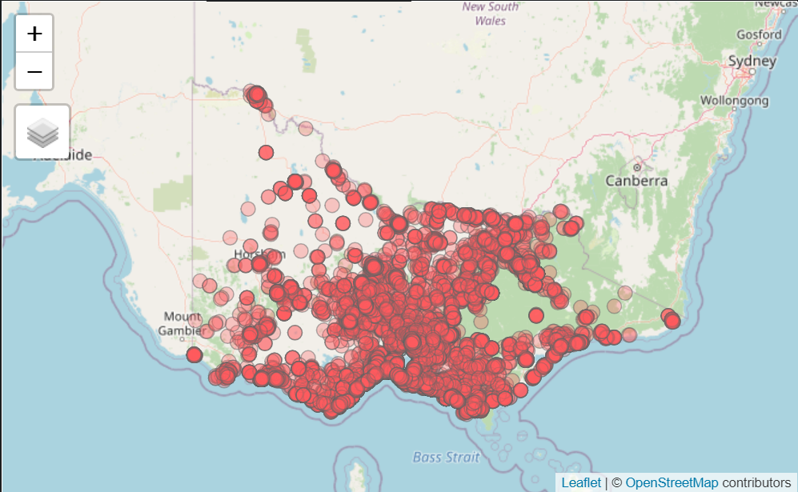
<Note: screen grab of the interactive viz is used for the blog post to reduce run time - actual interactive viz can be accessed via Github link provided at the start of assignment>
From the dot density map above, we see a larger cluster of listing around the coastal area, in particular around the Melbourne area (note that while State and Local Government Area are available as pop-ups when clicked on a particular point, Melbourne, in this instance, is not an LGA and will not appear). Another observation, if zoomed in enough, is that other than major city centers, listings also tend to be more prevalent along major highways (appear as red lines on the OpenStreetMap) and fringes of national parks (green patches on the OpenStreetMap)
Using the dot density map, we can easily and quickly visualize where the listings congregate in an area - in this case, the state of Victoria.
However, one major flaw (that has also been discussed earlier) become obvious: the viz appears over crowded and very cluttered - even with a 30% transparency, the overlapping of data makes actual dot representation inaccurate as some dots are covered. This makes counting of dots near impossible - that is, if anyone even bothered to try.
Proportion can be added to onto the dot density plot as we see above, to allow price - a continuous variable and our variable of interest - to enter as the size of the bubbles. In this case, we can continue to use the tmap package, but instead of a tm_dot layer for dot density, we use tm_bubbles to include size in each bubble.
From there, we just have to change the size parameter to the “price” variable in order to have the proportion of the dots to represent price of each listing.
tmap_mode("view")
tm_shape(vic_sf) +
tm_bubbles(col='#FF5A5F', size="price", alpha=0.3,
popup.vars=c("State"="region_parent_name","LGA"="region_name","Price"="price"))+
tm_basemap("OpenStreetMap")
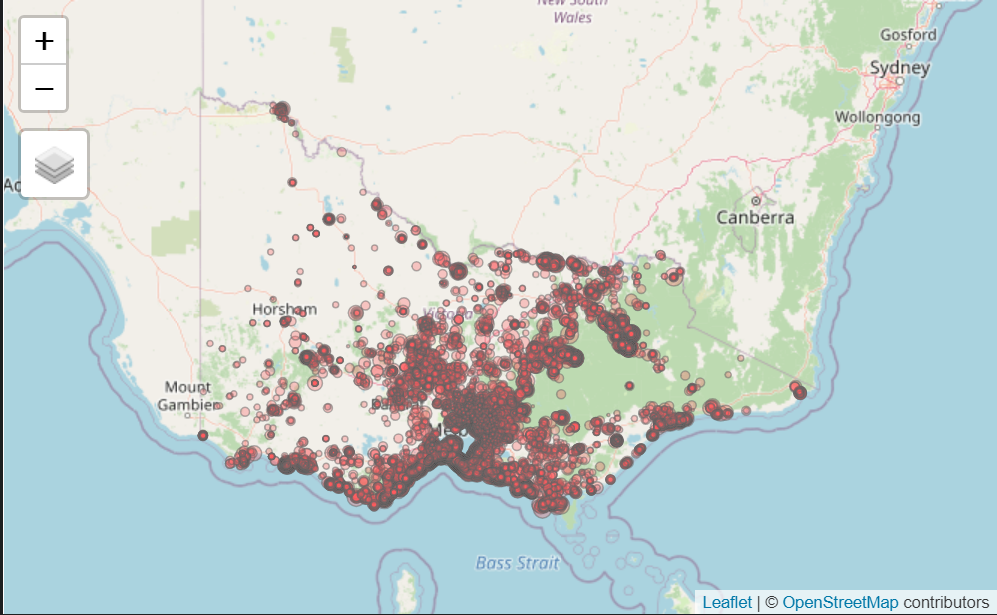
<Note: screen grab of the interactive viz is used for the blog post to reduce run time - actual interactive viz can be accessed via Github link provided at the start of assignment>
We observe that the issue of over-crowding is even more pronounced in this viz - adding on price as the proportion for the dot symbols is in no way meaningful since the dots are too closely aggregated together. One possible solution is to separate dots manually - but given the large number of data points, it would not be practically feasible.
Another plausible get-around is to use the LGA-aggregated sf dataframe to plot out the median price for each LGA.
tmap_mode("view")
tm_shape(vic_sf_clean) +
tm_bubbles(col='#FF5A5F', size="median_price", alpha=0.3,
popup.vars=c("State"="STE_NAME16","LGA"="LGA_NAME20","Price"="median_price"))+
tm_basemap("OpenStreetMap")
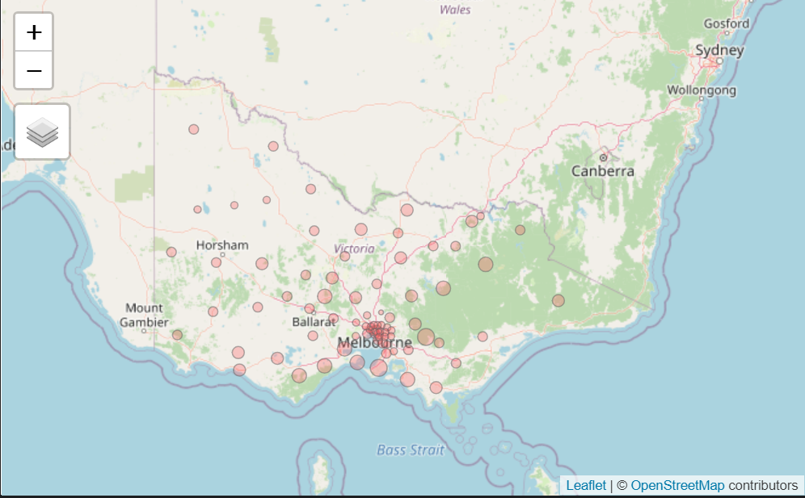
<Note: screen grab of the interactive viz is used for the blog post to reduce run time - actual interactive viz can be accessed via Github link provided at the start of assignment>
While cleaner and more tidy. this version sacrifices the intuitive observation on areas with large number of listings that we get from the dot density with proportional symbol version. The key limitation of proportional symbol maps is also made obvious in this iteration - it is difficult to make a fair judgement on the relative size of the dots visually.
Given the visual practicality and in consideration of the data we have on hand in this use case, dot density, dot density with proprtional symbol, and proportional symbol maps are all suboptimal in creating accurate and effective visual analysis.
We next move on to explore Cartograms.
Unlike the earlier two viz types that has been explored, Cartograms require a separate package - “cartogram” - to help create the visualization. The cartogram package also offers both the contiguous and non-contiguous viz, and requires the base mapping from tmap to map out the cartogram created using the package.
We first explore the contiguous cartogram. Before we proceed to create the cartogram, we first need to transform the second-level cleaned LGA-aggregated sf dataframe onto a map layer using an EPSG that projects the data coordinates. Only with this projected map layer, vic_price_cart, can we then proceed to create the cartogram. Creation of the cartogram is a simple one-liner - see vic_cart object below using the cartogram_cont command from the cartogram package (we set a max iteration of 5 for this trial run but it can easily be adjusted if need be).
# transform sf into sf with projections
vic_price_cart <- st_transform(vic_median_price,CRS("+init=epsg:3395"))
# Creating contiguous cartogram
vic_cart <- cartogram_cont(vic_price_cart, "median_price", itermax = 5)
Thereafter, we plot the cartogram using the tmap package codes. (Note, we disable to ‘view’ mode and use ‘plot’ for the rest of the iterations in this section to save space). In the tmap plot, we use the distorted contiguous cartogram map layer as the base shape, add on polygons which takes the median price variable as the color for the polygons, and adopt the “pretty’” style for the classification methods (more on this in later segment), and use the “RdPu” palette for the colors where darker shades of purple corresponds to a higher median price for the LGA. Lastly, we add on a tm_layout command to format the displayed viz, adding a title (and arranging its position), removing a frame for the map, and fixing the legend to the top right.
tmap_mode('plot')
tm_shape(vic_cart) +
tm_polygons("median_price", style = "pretty", palette='RdPu') +
tm_layout(frame = FALSE,
main.title='Contiguous Cartogram for Median Price of Listings in each LGA',
main.title.size = 1,
main.title.position = "center",
legend.position = c("right", "top"))
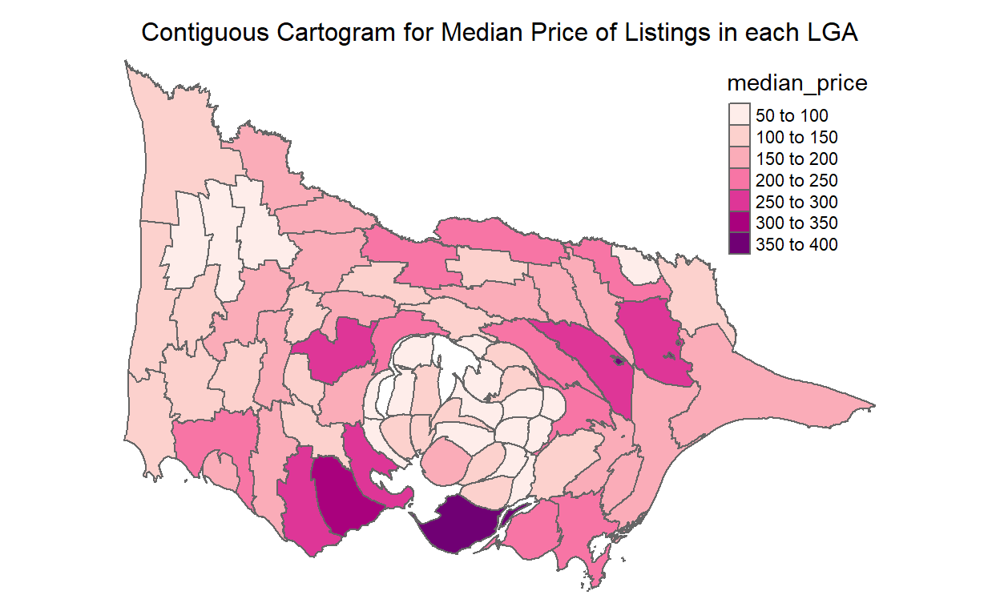
The distorted contiguous catogram above ’inflates’LGAs where median prices are proportionately larger than their geographic size, and deflates LGA for the opposite. In the above map, it is observed that areas around the bay area near Melbourne are having inflated areas (this is despite the fact that many of their median prices are not exceptionally high relative to other LGAs with deeper shades of purple).
However, as noted earlier in Section 2, there is no easy way in contiguous cartogram to know which of the LGAs has a larger distortion relative to another LGA, especially if viewers are not entirely familiar with the original shape and size of the geographical area. Without prior knowledge of how the LGAs are spread out in the Victoria state, it is difficult to draw immediate insights from the cartogram above, and even if viewers are familiar, comparison of proportionate distortion is challenging.
We next try out a non-contiguous cartogram prototype, where we have a base map, and the LGA outline overlay is deflated proportional to the median price of the area. Similarly, we start first by creating a non-contiguous cartogram polygons using the cartogram package, this time using the cartogram_ncont command.
# Non-contiguous cartogram
vic_ncont <- cartogram_ncont(vic_price_cart, "median_price")
Similar to the contiguous version, we use the tmap package to run the map layers, except this time round, we set the base map of Victoria as the outline with borders, then include the non-contiguous polygons we have created above as the shape, then let the median price take color within the non-contiguous polygons. The rest of the set up remains the same.
tmap_mode('plot')
tm_shape(vic_price_cart) +
tm_borders() +
tm_shape(vic_ncont) +
tm_polygons("median_price", style = "pretty", palette='RdPu') +
tm_layout(frame = FALSE,
main.title='Non-Contiguous Cartogram for Median Price of Listings in each LGA',
main.title.size = 1,
main.title.position = "center",
legend.position = c("right", "top"))
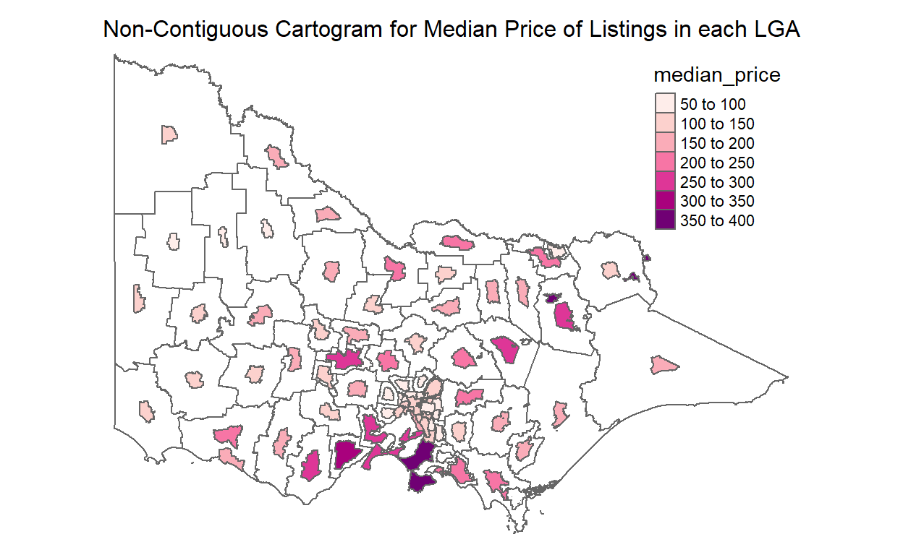
Observations are similar to the contiguous version, but this time we do not have to depend on inherent knowledge of the original boundaries, shapes, and sizes of the LGAs within Victoria. However, the issue of comparability and data extraction remains. While knowing the median price proportional to the geographical size of the LGA may be interesting, it is (as discussed in Section 2), perhaps a gimmick at best and worse, a distraction from other more useful information (imagine viewers start spending unnecessary amount of time trying to compare the proportion of the cartogram polygons).
While fun, the cartogram may not be the best package to use and the two versions of visualization above may not be the best option for clear display of information.
We next shift our attention to the wildly popular Choropleth.
Plotting out a Choropleth map is actually rather straightforward - we have in fact already dabbled with it earlier as part of the cartogram creation process. Same thing, we use tm_shape to map out the underlying base map, then we add on a tm_polygons layer, with median price as the variable and keeping other format settings similar to what we had done earlier.
tmap_mode("plot")
tm_shape(vic_sf_clean)+
tm_polygons("median_price",
style='pretty',
palette='RdPu')+
tm_layout(frame = FALSE,
main.title='Choropleth Map for Median Price of Listings in each LGA',
main.title.size = 1,
main.title.position = "center",
legend.position = c("right", "top"))
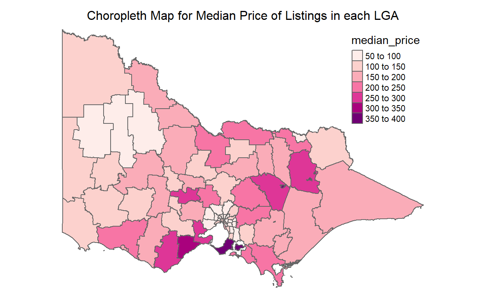
With the Choropleth, we have a neater and tidier visualization of the median price of each LGA, and hence, lesser distraction than the cartogram iterations.
In fact, it is possible to combined proportional symbols onto a choropleth to include another dimension of analysis into the viz. We simply have to add in a tm_symbol layer, as we did below, adding average rating for listings within the LGA, corresponding to the size of the square. Indeed, we can even include other categorical or numerical (with small number of value classes) by assigning them to the shape or color parameters to present even multi-dimensional information.
tmap_mode("plot")
tm_shape(vic_sf_clean)+
tm_polygons("median_price",
style='pretty',
palette='RdPu')+
tm_symbols(size="average_rating",
shape=22,
alpha=0.3)+
tm_layout(frame = FALSE,
main.title='Choropleth Map for Median Price of Listings \n with Proportional Symbols for Average Ratings in each LGA',
main.title.size = 1,
main.title.position = "center",
legend.position = c("right", "top"))
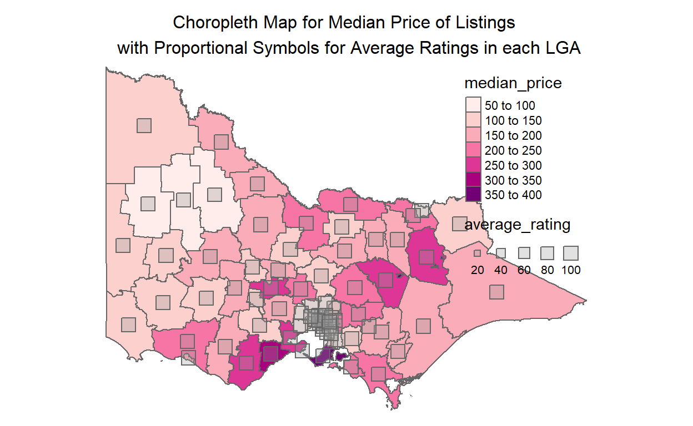
However, as evident above, the problem of overcrowding and difficulty in comparison and extracting of precise information resurfaces in this iteration. Having more may really mean less in this case: having more data ink that are unhelpful in fact reduces readability.
In view of the above discussion, it can be concluded that a plain Choropleth would make the best geographical visualization of the variable of interest.
Pretty
In earlier iterations, we have used the “pretty” style, as with the default of the tmap package. The “pretty” style rounds breaks into whole numbers where possible and spaces them out evenly (and hence “pretty”). We have seen that each class that was derived are indeed evenly spaced out e.g. 50-100, 100-150, etc. However, this would mean that the data points, if not evenly distributed across the classes, will not be even.
To examine this, we can have a view of the distribution by plotting a histogram of the variable’s distribution (in this case, median price of each LGA), and coloring each bar by their class. Good thing is, tmap actually allows us to plot a miniature version of this histogram along the legend, using the legend.hist command (we also shift the legend to outside the map to prevent overlap, and adjust the width of the histogram width for easier viewing).
Further, tmap also allows user to dictate the number of classes to be split. in this case, we can try a new class number by including the ‘n’ parameter (e.g. 4 classes are dictated in the case below).
tmap_mode("plot")
tm_shape(vic_sf_clean)+
tm_polygons("median_price",
style='pretty',
n=4,
palette='RdPu',
legend.hist=T)+
tm_layout(frame = F,
main.title='Choropleth Map for Median Price of Listings Average Ratings in each LGA',
main.title.size = 1,
main.title.position = "center",
legend.outside = T,
legend.hist.width = 1)
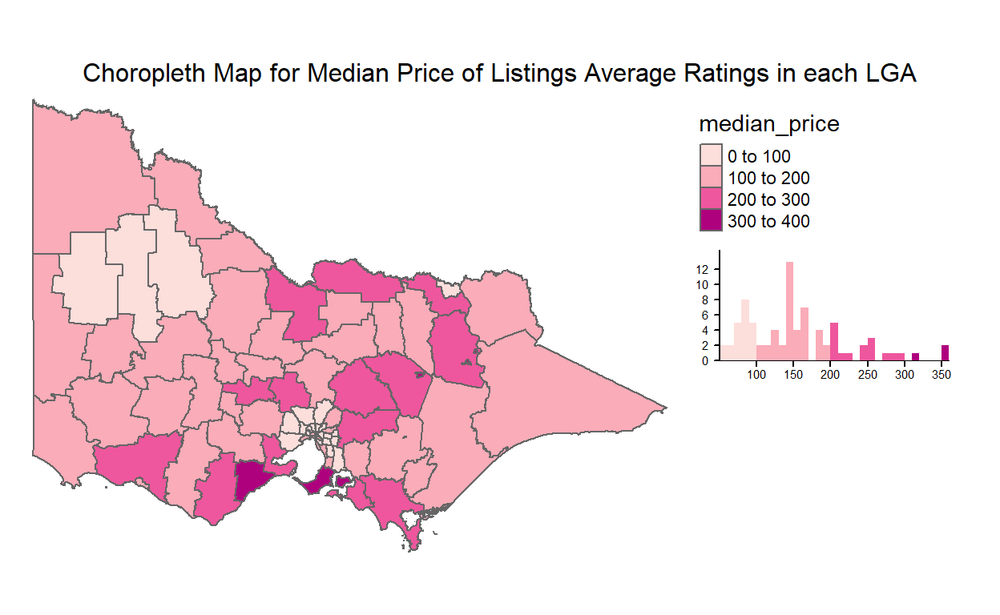
[1] "#FCDEDB" "#FAACB8" "#EE579D" "#AE017E"From the viz above, we see that classes are break rather evenly, but the distribution of the data points are less even, with many falling within the 100-200 range and very few in the 300-400 range.
Of course, ‘pretty’ is not the only classification method. Another similar style is ‘fixed’, where the breaks can be manually determine, and a label included to overwrite default labels.
Fixed
tmap_mode("plot")
tm_shape(vic_sf_clean)+
tm_polygons("median_price",
style='fixed',
breaks=c(0,125,175,245,275,400),
labels=c("low","medium-low","medium","medium-high","high"),
palette='RdPu',
legend.hist=T)+
tm_layout(frame = F,
main.title='Choropleth Map for Median Price of Listings Average Ratings in each LGA',
main.title.size = 1,
main.title.position = "center",
legend.outside = T,
legend.hist.width = 1)
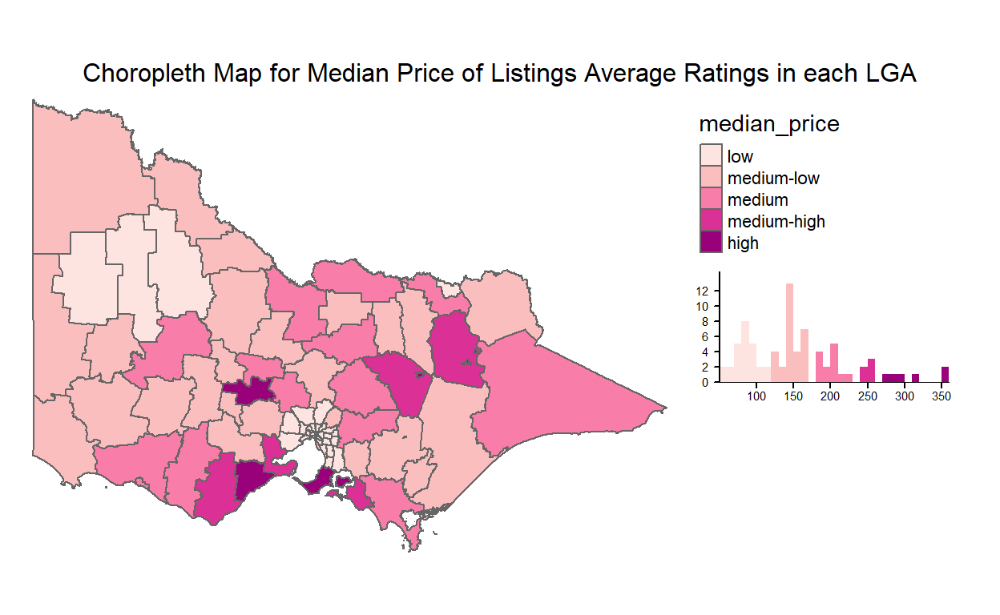
[1] "#FDE4E1" "#FBBEBE" "#F87EA9" "#DB3196" "#99017B"In the viz above, we tried to manually segment the classes at their natural breaks (i.e. where there are gaps in their distribution as evident in the histogram, we split them). There is also another style, “jenks” that creates classes based on natural breaks using algorithm that maximizes differences between each class.
Jenks’ Natural Breaks
tmap_mode("plot")
tm_shape(vic_sf_clean)+
tm_polygons("median_price",
style='jenks',
palette='RdPu',
legend.hist=T)+
tm_layout(frame = F,
main.title='Choropleth Map for Median Price of Listings Average Ratings in each LGA',
main.title.size = 1,
main.title.position = "center",
legend.outside = T,
legend.hist.width = 1)
[1] "#FDE4E1" "#FBBEBE" "#F87EA9" "#DB3196" "#99017B"The results are rather similar to the manual natural breaks used, though there are some “misclassed” data points in the fourth class (appears to subsumed one data point that would have been more ‘natural’ with the third class). Though not perfect, this style is useful to identify natural breaks especially for cases where the data set is large and ‘breaks’ are less visibly obvious. There is another similar yet different style using the “fisher” algorithm that maximized homogeneity (i.e. minimizes variance within group).
Fisher’s Algorithm
tmap_mode("plot")
tm_shape(vic_sf_clean)+
tm_polygons("median_price",
style='fisher',
palette='RdPu',
legend.hist=T)+
tm_layout(frame = F,
main.title='Choropleth Map for Median Price of Listings Average Ratings in each LGA',
main.title.size = 1,
main.title.position = "center",
legend.outside = T,
legend.hist.width = 1)
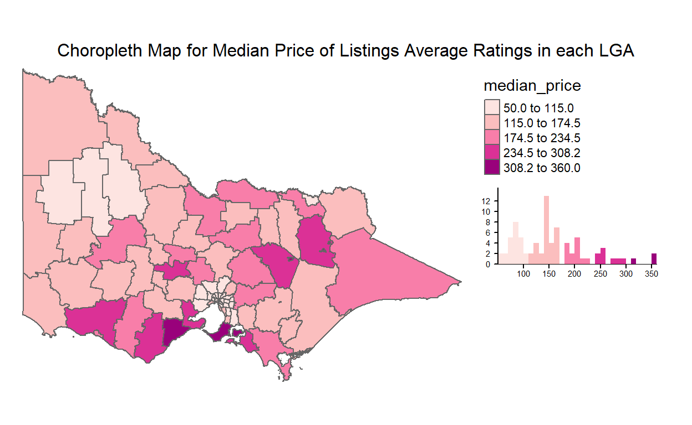
[1] "#FDE4E1" "#FBBEBE" "#F87EA9" "#DB3196" "#99017B"In this case, Fisher’s algorithm pretty much does as well in identifying natural breaks as the manual method. There are many more classification methods available in the tmap package, such as quantile, equal, and sd breaks; breaks based on various clustering analysis such as hierarchical, k-means, and bagged; breaks based on logarithm scale; and even option to present the choropleth in a continuous scale. Nowosad (2020) presents a quick summary of the various methods and links to papers that futher substantiates the theory behind these classification methodologies.
In the conduct of a geospatial analysis and visualization, there would be different circumstances where certain classification method would be more appropriate and/or applicable than another. There could even be situations where different methods would need to be compared with each other. To ensure a holistic and robust geospatial analysis, there is a need to offer autonomy for user to change these parameters during their analysis. While it may be tedious to run individual lines of codes separately, interactivity introduced in the web-based application that allows user to toggle between the different classification methods at the click of a button would exponentially enhance the usability of the application.
Hence, it is critical to include this interactivity in the final Shiny application.
We move on to discuss another aspect of variability - variable of interest.
As informed earlier, the main prototyping used median price for each LGA as the main variable of interest. In the complicated choropleth with proportional symbol in the section immediately above, we also explore including other variables that might be of interest. While including them as additional dimensions within the choropleth map complicates and clutters the limited real estate on the viz, we can easily change the input variable to plot out our choropleth easily (in fact, with just a change to one line of code). As with the above, we explore the distribution of average ratings for all listings within each LGA below, where we changed the first argument of the tm_polygons command from “median_price” to “average_rating”
Average Rating
tmap_mode("plot")
tm_shape(vic_sf_clean)+
tm_polygons("average_rating",
style='pretty',
palette='RdPu',
legend.hist=T)+
tm_layout(frame = FALSE,
main.title='Choropleth Map for Average Ratings of All Listings in each LGA',
main.title.size = 1,
main.title.position = "center",
legend.outside = T,
legend.hist.width = 1)
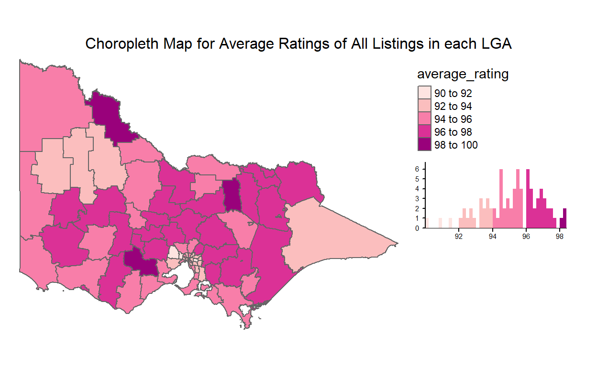
[1] "#FDE4E1" "#FBBEBE" "#F87EA9" "#DB3196" "#99017B"From the viz, it is immediately obvious that average ratings are very heavily skewed to the right, with all LGAs having a ratings of more than 90, and the most common ratings between 94-98. There also appears to be a cluster of higher ratings in central Victoria.
Number of Listings
We had earlier started off the discussion for this section talking about the count of listings and its geographical spread visualized using the dot density map. Now, we revisit this variable. With the Choropleth, it is now neater and easier to distill the actual numbers even within the cluttered bay area around Melbourne. In this case, though, we are unable to use the ‘pretty’ style, as many the distribution has an extremely long right-tail, with one extreme outlier at Mornington Peninsular with more than 6000 listing in this one LGA alone.
Thinking back, it was audacious thinking we can map 6000 dots altogether in that one small area using the dot density map.
tmap_mode("plot")
tm_shape(vic_sf_clean)+
tm_polygons("listing_count",
style='fisher',
palette='RdPu',
legend.hist=T)+
tm_layout(frame = FALSE,
main.title='Choropleth Map for Total Number of Listings in each LGA',
main.title.size = 1,
main.title.position = "center",
legend.outside = T,
legend.hist.width = 1)
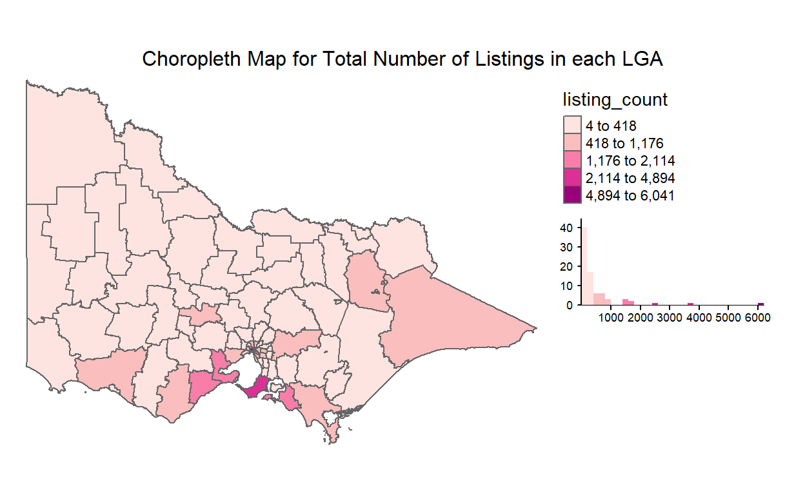
[1] "#FDE4E1" "#FBBEBE" "#F87EA9" "#DB3196" "#99017B"Average Response Rate
Other than continuous raw data, rate variables such as average acceptance and response rates can also be ploted on the Choropleth, as with the example below for the latter.
tmap_mode("plot")
tm_shape(vic_sf_clean)+
tm_polygons("average_response_rate",
style='fisher',
palette='RdPu',
legend.hist=T)+
tm_layout(frame = FALSE,
main.title='Choropleth Map for Average Response Rates of all Listings in each LGA',
main.title.size = 1,
main.title.position = "center",
legend.outside = T,
legend.hist.width = 1)
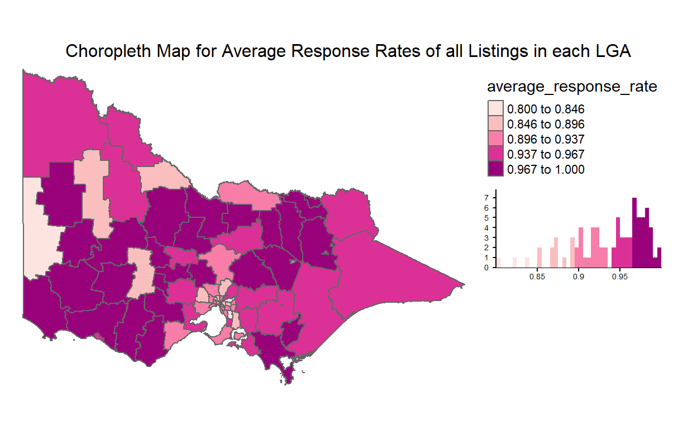
[1] "#FDE4E1" "#FBBEBE" "#F87EA9" "#DB3196" "#99017B"Similarly, we found an outlier in Western Victoria (West Wimmera) where response rates appears suspisciously lower than surrounding LGAs.
To conclude this sub-section, there is hence a need for interactivity in the web-based application to be developed in order to support more diverse and robust analytical usage.
In the geospatial visualization above, we noticed some of the variables of interest such as the median price (around Melbourne bay area) and average ratings (in Central Victoria) appears to have some apparent clusters of high values. On the other hand, we also idenfitied some outliers such as the number of listings at the Mornington Peninsular and response rate in West Wimmera.
How do we exactly justify whether these clusters and outliers are really there, statistically speaking? That is, how can we be sure that what appears to be a cluster of high values or outlier of apparent high value in low value areas are not due to randomness in the geospatial distribution of these variables? That is the thesis statement for this section - geospatial cluster and outlier analysis.
A more in-depth discussion on the theoretical aspect of this topic can be found in Section 2.2 above. In this section, we will be prototyping both the Getis-Ord’s G z-score plots and the Anselin’s Local Moran’s I plots, using the spdep package. However, before we dive straight into the derivation of the spatial association indicators, we will first need to define the ‘neighbors’ that we need to consider when analyzing clusters and outliers.
There are several methods to deriving this neighbor list that would be needed subsequently to derive the spatial weight for spatial association analysis. Broadly speaking, there are two types of neighborhoods:
Contiguity-based neighborhood, which considers neighboring polygons to be those that are in contact with a subject polygon. Using the international chess board as an analogy, two sub categories are considered, a) Queen’s case - which considers all immediate neighbors in all direction, and b) Rook’s case - which considers neigbors that share a line segment. The poly2nb function from the spdep package provides the calculation of these contiguity-based neighborhood spatial weights.
Distance-based neighborhood, which are constraints driven, considering neighbors as those within a given proximity threshold from a polygon centroid. Similarly, two sub categories are considered in this paper, a) K-nearest neighbors - which selects the k number of neighbors closest to the centroid of subject polygon, and b) Distance - which, as the name suggests, selects all neighbors within a pre-determined set of minimum (typically 0) and maximum distance. knn2b together with knearneigh as well as dnearneigh functions from the same spdep package are used to derive these neighbor lists.
We start first with the Contiguity-based cases: the code is a simple one-liner. Where queen equals to True, the Queen’s case is considered; and when False, the Rook’s.